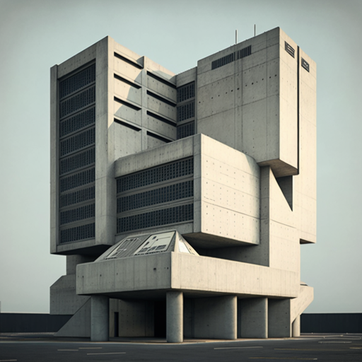
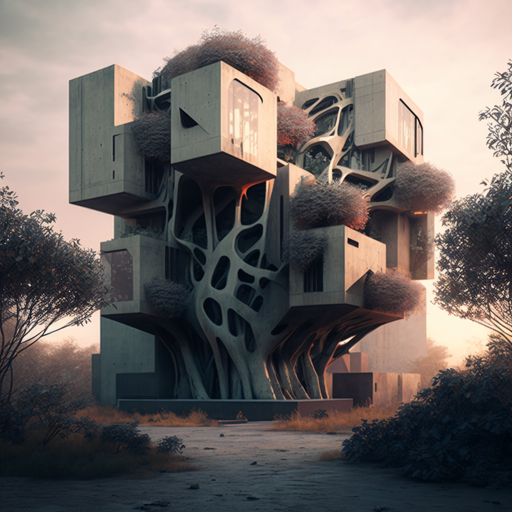

Brutalism, an architectural style that rose to prominence in the mid-twentieth century, continues to be a source of inspiration for architects and designers today. Despite being criticized for its raw, concrete aesthetic and perceived lack of ornamentation, brutalism has endured as a cultural icon, inspiring new generations of architects to revisit its aesthetic and principles.
One reason why brutalism continues to be relevant today is its emphasis on functionality and simplicity. Brutalist buildings are often characterized by their clear, honest expression of form and materials. This emphasis on function over form has inspired contemporary architects to adopt a similar approach, seeking to create buildings that are responsive to their context and users while still maintaining a strong sense of identity.
Moreover, the materiality of brutalist buildings, with their exposed concrete and structural elements, has become an important source of inspiration for designers seeking to create honest and authentic spaces. Many contemporary architects are now exploring the expressive potential of raw materials, celebrating the natural textures and patterns found in materials such as concrete, steel, and brick.
Overall, brutalism remains a significant influence on contemporary architecture and design. By emphasizing function, materiality, and authenticity, the principles of brutalism continue to inspire architects and designers to create spaces that are both practical and visually compelling, while also celebrating the inherent beauty of the materials and forms they employ.